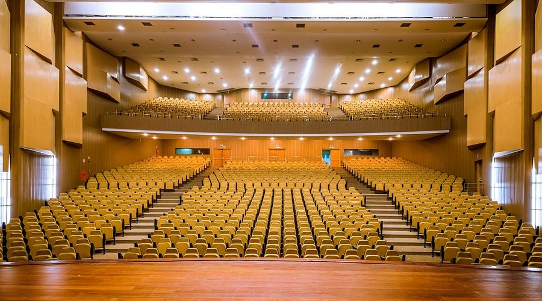

Maceió

Maceió, a capital do estado de Alagoas, é um dos destinos turísticos mais cobiçados do Nordeste brasileiro, conhecida por suas praias paradisíacas, clima tropical e hospitalidade. A cidade possui uma grande variedade de atrações turísticas, que incluem praias de águas cristalinas, uma rica cultura local, e uma culinária que mistura influências indígenas, africanas e portuguesas. Além disso, Maceió é famosa por sua infraestrutura moderna e acessibilidade, o que a torna um destino ideal tanto para quem busca descanso quanto para quem deseja explorar a história e a cultura da região.
O município também oferece aos turistas uma excelente combinação de lazer, gastronomia e eventos culturais, com destaque para o artesanato e as festas típicas, como o Carnaval e o São João.
Principais pontos turísticos
- Praia do Francês
- Praia do Carro Quebrado
- Praia de Pajuçara e a Lagoa do Mundaú
- Igreja de São Gonçalo do Amarante
- Palácio Marechal Floriano Peixoto (Palácio Marechal)
- Praia do Gunga
A Praia do Francês é uma das mais famosas de Maceió, localizada a cerca de 20 km do centro da cidade. Com suas águas calmas e claras, é ideal para a prática de esportes aquáticos, como stand-up paddle, windsurf e mergulho. Além disso, a praia possui uma excelente infraestrutura com bares, restaurantes e quiosques.
A Praia do Francês é muito procurada por famílias e turistas em busca de relaxamento e diversão à beira-mar.
A Praia do Carro Quebrado é uma das mais encantadoras e menos exploradas de Maceió, localizada na região litorânea de Alagoas. A praia possui falésias vermelhas e paisagens deslumbrantes, sendo um lugar tranquilo e paradisíaco para quem busca um contato mais íntimo com a natureza. O nome curioso da praia vem de uma história local, onde um carro teria quebrado na região.
A Praia de Pajuçara é uma das mais urbanizadas de Maceió e oferece aos turistas uma vista panorâmica de ilhotas e de um mar calmo, ideal para banho. De lá, é possível embarcar em passeios de jangada até as famosas Piscinas Naturais de Pajuçara, onde a água é cristalina e as espécies marinhas são abundantes. Além disso, a Lagoa do Mundaú é um ponto turístico interessante para quem deseja conhecer um pouco mais da vida local e das comunidades pesqueiras da cidade.
A Igreja de São Gonçalo do Amarante, no centro de Maceió, é um exemplo de arquitetura colonial e religiosa, sendo um dos marcos históricos da cidade. Com seu estilo barroco, a igreja é um ponto de peregrinação para os devotos e também uma atração turística que carrega um grande valor cultural para a cidade.
O Palácio Marechal Floriano Peixoto, também conhecido como Palácio Marechal, é um edifício histórico que serve como sede do governo estadual de Alagoas. O local é um exemplo da arquitetura e da história política de Maceió, sendo uma das construções mais imponentes da cidade. O palácio está aberto para visitas e oferece aos turistas uma perspectiva sobre a história do estado.
A Praia do Gunga, localizada a aproximadamente 30 km do centro de Maceió, é uma das mais visitadas e conhecidas do estado. Ela é famosa pela beleza das falésias e pela paisagem deslumbrante de coqueirais e águas cristalinas. Além disso, a praia oferece passeios de barco e quadriciclo, sendo uma excelente opção para quem gosta de aventura e de explorar a natureza.
Principais pontos gastronômicos
- Restaurante Parmegianno
- Localização: Diversas unidades na cidade.
- Bodega do Sertão
- Localização: Bairro Jatiúca.
- Restaurante Wanchako
- Localização: Bairro Ponta Verde.
- Imperador dos Camarões
- Localização: Pajuçara.
O Restaurante Parmegianno é um dos mais renomados de Maceió, conhecido por seus pratos de frutos do mar e pela alta qualidade no atendimento. O restaurante oferece uma variedade de pratos com camarões, peixes e frutos do mar, com destaque para o camarão ao alho e óleo e a moqueca de peixe.
A Bodega do Sertão é um restaurante tradicional de Maceió que serve pratos típicos da culinária nordestina, com especialidade em carnes, como carne de sol, arroz de carne de sol e feijão verde. O ambiente é acolhedor, com decoração que remete à cultura nordestina e ao sertão.
O Wanchako é um restaurante que oferece uma fusão de sabores brasileiros e peruanos, com pratos típicos da culinária andina, como ceviche e tacacá. O ambiente é moderno e sofisticado, perfeito para quem deseja uma experiência gastronômica diferente e inovadora em Maceió.
O cardápio não é extenso, mas os pratos são saborosos e bem servidos. No local você encontrará pratos como carnes, peixes e diversas opções de ceviche - sempre com o toque especial peruano.
O Imperador dos Camarões recebeu uma certificação de excelência em 2017, com menu completo que agrada a todos os gostos. Com relação aos pratos, os famosos Chiclete de Camarão e o Camarão Empanado são uma boa pedida. Mas, se Camarão não é o seu preferido, você ainda pode escolher entre a grande variedade de carnes, outros frutos do mar e ainda, algumas opções sobremesas.
Principais pontos culturais
- Museu Théo Brandão
- Localização: Centro de Maceió.
- Teatro Deodoro
- Localização: Centro da cidade.
- Museu Palácio Marechal
- Localização: Centro de Maceió.
- Cultural Center of Maceió (Centro Cultural de Maceió) 
- Localização: Centro de Maceió.
O Museu Théo Brandão é um importante centro cultural de Maceió, dedicado à arte popular e à cultura nordestina. O museu abriga um acervo significativo de obras de arte e artesanato, além de exposições temporárias que exploram a história e as tradições de Alagoas. É um excelente local para quem deseja conhecer mais sobre a cultura e as raízes do estado.
O Teatro Deodoro é um dos principais palcos culturais de Maceió, com uma rica programação de peças teatrais, dança e música. Localizado no centro da cidade, o teatro é um importante espaço de difusão das artes e da cultura local, e sua arquitetura neoclássica adiciona um charme especial ao local.
O Museu Palácio Marechal, que ocupa o mesmo edifício do palácio, é dedicado à história política e cultural de Alagoas. O museu apresenta exposições sobre a história da cidade e do estado, bem como móveis e objetos de época que ajudam a entender a trajetória de Maceió.
O Centro Cultural de Maceió é um centro dedicado à promoção da cultura local, oferecendo exposições de arte, música e outros eventos culturais. O centro é um espaço multifuncional que promove o intercâmbio de ideias e manifestações artísticas de diversas formas.